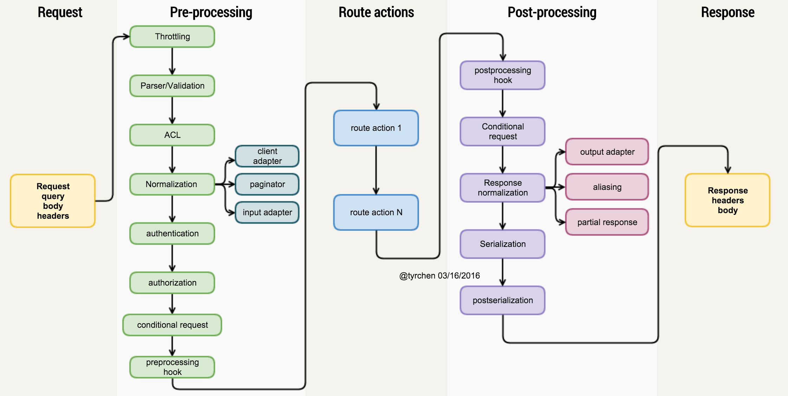

2016 年终技术分享
构建合格的 API Server & 一些值得关注的新技术
by
Maples7
2017.1
架构
图片来源：
https://zhuanlan.zhihu.com/p/20691649
Process Pipeline

图片来源：
https://zhuanlan.zhihu.com/p/20691649
一些值得一提的新技术

 图片来源：https://zhuanlan.zhihu.com/p/20691649
图片来源：https://zhuanlan.zhihu.com/p/20691649